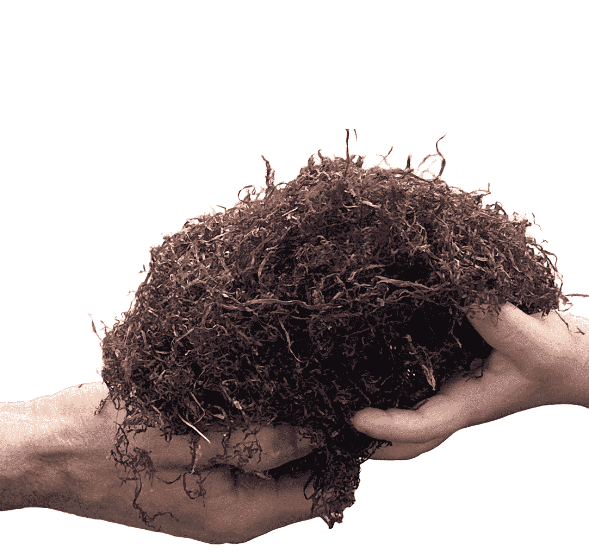

Somos tres personas enamoradas de Cantabria.
Israel, cántabro de nacimiento. Durante generaciones, Israel y su familia se han dedicado a la recolección del alga roja en San Vicente de la Barquera.
Irune, después de una larga trayectoria profesional en Madrid, decide sentar raíces en Cantabria, y quiere desarrollar negocio vinculado 100% a esta maravillosa tierra, enfocado a generar más trabajo y riqueza en Cantabria.
Laura, también madrileña ya asentada desde hace más de diez años en Cantabria, ha desarrollado su trabajo en ventas, en diferentes sectores.
¡Nos unimos y creamos Alganorth en Enero 2024!
-kOxG-U40859010034TeG-624x385@El%20Comercio.jpg)
Iniciativa empresarial que fomenta y preserva la acuicultura en Cantabria, defiende la supervivencia de la recolección tradicional del gelidium y las familias que viven de este sector.
Las algas Gelidium están en estado vulnerable, frente a nuevas especies de algas que se cultivan y comercializan desde otros países. Queremos posicionar Cantabria, como la primera comunidad en España, que recolecta y distribuye alga roja con sello “Ecológico”, generando valor y calidad competitivo frente al alga roja que se importa de otros países.
Muchas familias cántabras viven de las recolección del alga roja.
Alganorth quiere contribuir desarrollo de la región exportando el Gelidium sesquipedale.
